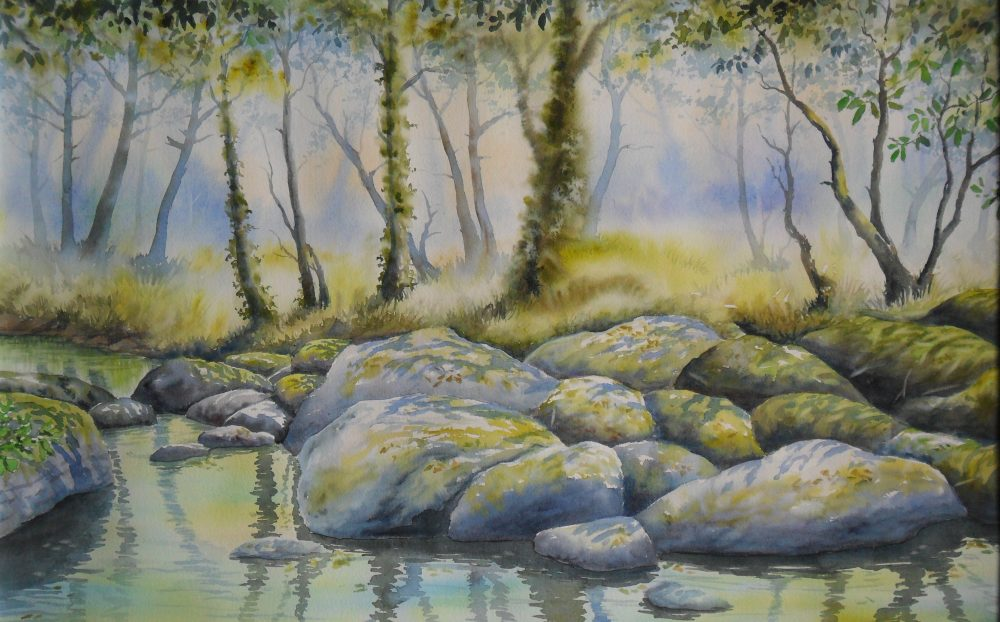

Imagine ton paysage
Deux chantiers pour découvrir la démarche du concepteur paysagiste. Analysez d’abord le site, puis proposez un aménagement cohérent.
Projet PIC — Antoine Coquel & Clément Delsupexhe

Fin de la mission
| Chantier | Score | Étoiles |
|---|
Chantier terminé
0 / 560 points
Règles du jeu
Détail de la partie
Observation du site
Espace réservé
Entrez le code administrateur pour ouvrir les réglages du jeu.